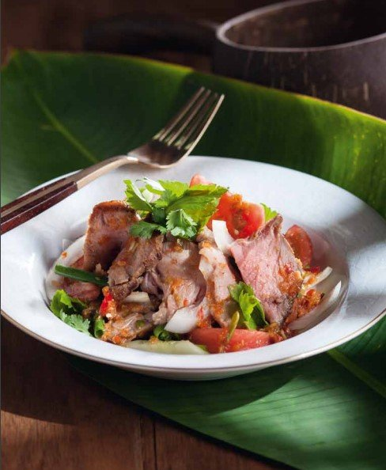

Yum Neua Yang

Thai spicy steak salad.
Ingredients for Yum Neua Yang
- A piece of grilled steak
- A half cup of sliced onions
- Sliced tomatoes - cherry tomato is recommended
- A cup of Chinese celery or the leaves of regular celery
- Chopped green onions
- Roughly chopped cilantro for garnish
Ingredients for yum dressing
- Lime juice
- Fish sauce
- Sugar or palm sugar
- Finely chopped Thai chilies
How to make Yum Neua Yang
- Mix together the yum dressing in a large bowl.
- Add Onion, tomatoes, Chinese celery, green onion and cilantro to the bowl and mix it with dressing.
- Slice up the steak and add them to the bowl.